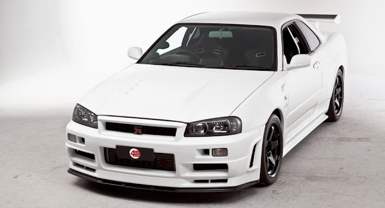
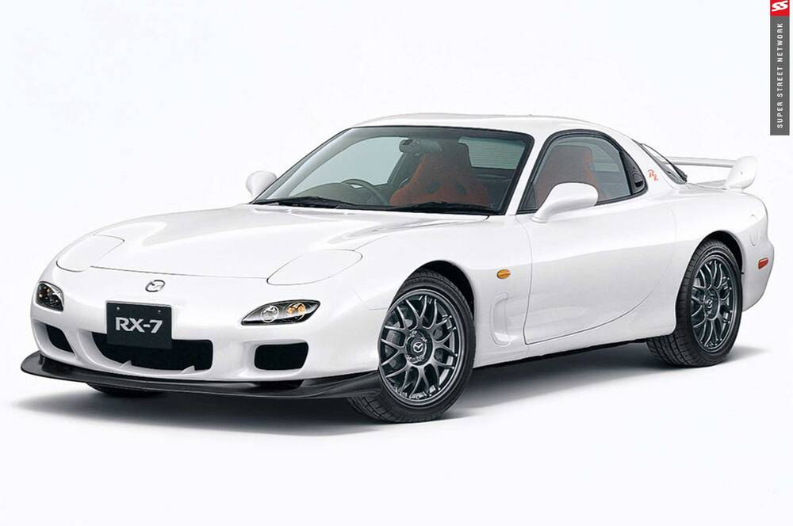

Melhores JDMS na minha opnião
1º Lugar: GT-R V-Spec II Nür (R34)

Motor 6 cilindros 2.6
Potência/Torque 320 cv/ 39,97 kgfm
Velocidade máxima 250 km/h 156 MPH
Transmissão Integral / diferencial de deslizamento limitado
Suspensão Coilovers / amortecedores controlados eletronicamente
Roda e Pneus Tein TE37 Saga/ pneus BF Goodrich g-Force 265/35 ZR18
Freios Brembo/ tambor
Peso 1.660 kg
Dimensões Comprimento 4600 mm/ Largura 1785 mm/ Altura 2665 mm
Consumo 16 l/100kmc 9 l/100kme
2º Lugar: MAzda rx-7

Velocidade Máxima : 250 Km/h / 155 Mph
Aceleração 0 aos 100 km/h : 5.3 s Tipo de Carroceria / Configuração : Coupé
Num. de Portas : 2
Distância entre Eixos : 242.5 cm / 95.47 in
Comprimento : 429.5 cm / 169.09 in
Largura : 175.0 cm / 68.9 in
Altura : 123.0 cm / 48.43 in
Bitola dianteira : 146.0 cm / 57.48 in
Bitola traseira : 146.0 cm / 57.48 in
Coeficiente aerodinâmico (Cx) : 0.31
Freios dianteiros : Discos Ventilados
(- mm / - in)
Freios traseiras : Discos Ventilados
(- mm / - in)
Pneus da Frente : 225/50 R16
Pneus de Trás : 225/50 R16
Largura Jantes Frente : 8.0"
Lagura Jantes Trás : 8.0"
Diâmetro de giro : 10.2 m / 33.5 feet
Peso : 1310 Kg / 2888 lbs
Relação Peso/Potência : 5.1 kg/hp
Volume do Porta-malas : 200 L / 7.1 cu-ft
Suspensão da Frente : Independent. Double Wishbones. coil springs. anti-roll bar
Suspensão de Trás : Independent. Double Wishbones. anti-roll bar